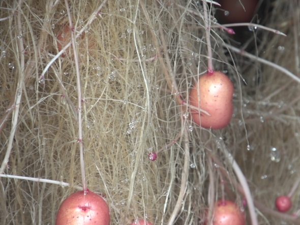

<!-- <ion-header>
  <ion-toolbar>
    <ion-title></ion-title>
  </ion-toolbar>
</ion-header> -->

<ion-content>
  <ion-row>
    <ion-card-content class="texto">
      <!-- ¿Observa algún síntoma o daño en la base del tallo? -->
      {{nombre.titulopreg3}}
    </ion-card-content>
  </ion-row>

  <ion-row class="cuadro">
    <ion-col>
      <ion-item routerLink="../../../respuesta3/vnematodos">
        <ion-label>{{nombre.res14}} </ion-label>
      </ion-item>
    </ion-col>
    <ion-item>
      <ion-icon name="add-circle-outline"></ion-icon>
      <ion-icon
        (click)="raicessanasImage()"
        color="success"
        name="images-outline"
      ></ion-icon>
    </ion-item>
    <ion-row   routerLink="../../../respuesta3/vnematodos">
      <!-- (click)="raicessanasModal()" -->
      
    </ion-row>
  </ion-row>

  <ion-row class="cuadro">
    <ion-col>
      <ion-item routerLink="../../../respuesta3/nematodos">
        <ion-label>{{nombre.res15}}</ion-label>
      </ion-item>
    </ion-col>
    <ion-item>
      <ion-icon name="add-circle-outline"></ion-icon>
      <ion-icon
        (click)="presenciabolitasImage()"
        color="success"
        name="images-outline"
      ></ion-icon>
    </ion-item>
    <ion-row routerLink="../../../respuesta3/nematodos" >
      <!-- (click)="presenciabolitasModal()" -->
      
    </ion-row>
  </ion-row>
</ion-content>
